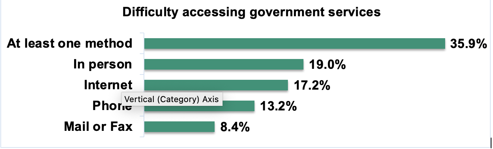

AccessAbility Playbook: Delivering accessible client service
Play 1 Learn about accessibility, it's more than you think
Barrier-free access for everyone
Over the years, many decisions were made to better serve Canadians. However, some of these decisions might have created obstacles that make it difficult, or even sometimes impossible, for persons with disabilities to access government programs and services.
What is accessibility
Accessibility can be described as the “ability to access” without encountering any barriers. Barriers are the obstacles for persons with disabilities that prevents them from doing the things many of us take for granted. In practice, accessibility is about having a barrier-free access, being treated with dignity, having meaningful options for interacting with government and getting consistent information everywhere across all service channels. Everyone benefits from accessibility.
Why accessibility matters
The Government of Canada serves millions of people that have diverse needs and expectations. The challenge is to serve them better equally. We need to change because it is the right thing to do. Accessibility is about respecting human rights. All Canadians are entitled to receive government services and benefits.
Your role as a public servant
Your job is to make sure that all Canadians have meaningful options for interacting with government, regardless of their personal situation. Learn from each other so that you can do better. Equitable access should be part of what we do every day.
Existing client service barriers
Check out five service areas that were identified as creating challenges for people living with a disability or functional limitation.
Physical Space
Clients may find it difficult to travel to a building because of the location. For others it could be signage that is not clearly in their line-of-sight or it might be the background noise that is disturbing. Some design elements can make it difficult to use stairs or navigate doorways and hallways. For some, the layout of the rooms and how the furniture is displayed can be a tripping hazard. In addition, features such as plexiglas barriers can also cause challenges for clients with hearing impairment.
Policies & Processes
The policies and processes you create to implement existing laws and regulations can make access difficult for clients and have negative impacts on client needs and expectations. An example would be a service representative that is not authorized to fill out a form on behalf of the client. This can present a barrier to accessing a service or benefit.
Language & Information
Clients may not be able to understand if the information is too complex, government communications has earned a reputation for being difficult to understand. Accessible formats – and accessible ways to obtaining accessible formats – can
not be an afterthought. Similarly, sign language interpretation and not forcing screen readers to go through long privacy statements that sighted clients can scroll past, are essential elements of respect.
Communicating in plain language is essential for some people with disabilities to access information.
Awareness & Attitude
If you do not promote accessibility features, clients may not feel confident in their abilities to access your program or service. Client can miss out on important information if communication is not effective and timely. If employees do not have proper training, it may result in misunderstanding, confusing or dismissive behaviour. It may also lead to assumptions or unfair judgments about a person’s ability or appearance. Always remember that everyone deserves to be treated with dignity.
Technology
Some systems are not set up or designed to support the use of appropriate tools and devices such as screen readers, accessible keyboards and audio player. This also applies to systems that do not allow for compatibility with client assistive devices used at home. For example, the accessibility of websites and electronic equipment within the premises such as wayfinding devices, accessible self-service kiosks, the need to use a joystick instead of a mouse, etc. The World Wide Web Content Accessibility Guidelines (WCAG) is the starting point, always strive to do better.
Most common types of disability
The personal situation of someone living with one or more types of disability can be permanent, temporary or episodic. Symptoms can be visible or hidden. Genetic disorders, illness or accidents can hinder a person’s full and equal participation in society.
Physical
Difficulty with mobility, standing while waiting or reaching counters and door knobs. Includes mobility, flexibility, dexterity issues and pain. Examples:Musculoskeletal issues, neuropathic problems, visceral issues, difficulty walking, using fingers, bending down or reaching.
Cognitive
Difficulty with perception, memory, judgment, and reasoning. Difficulty with understanding written and spoken language, meeting new people or following instructions. Examples: Down's Syndrome, autism, cerebral palsy, dementia, Alzheimer's, brain injuries, dyslexia, Attention deficit hyperactivity disorder (ADHD).
Hearing
Difficulty with hearing another person talking (either in-person or on phone), especially in a noisy environment, or pronouncing words clearly. Examples: Hearing impairment (mild to profound hearing loss) or deafness, may include conditions such as vertigo or tinnitus.
Mental health
Difficulty with functioning in certain environments (noisy, crowded), concentrating or processing information. Feeling anxious, depressed, confused or having mood changes. Examples: Anxiety, depression, bipolar disorder, substance abuse, anorexia.
Communication
Difficulty with pronouncing words or making oneself understood. Examples: Apraxia of speech, cluttering, stuttering, muteness, Cerebral Palsy where muscles move in uncoordinated ways and speech is slurred.
Vision
Difficulty with maneuvering through an office, reading forms and signage or seeing faces. Examples: blindness, photosensitivity, visual stimuli (e.g. quick, bright flashes)
Play 2 Understand how barriers affect persons with disabilities
Someone living with a physical disability or a condition affecting mobility and agility
Many in this client group have visible disabilities. It is important to keep proper accessibility measures up to date, well understood, tested and maintained for functionality. Any improvements should go beyond the building codes and standards. For example, make it a business requirement to have service centres located near public transit, have parking close to the main entrance and test automatic door openers each day as part of standard procedures. This can help ensure the clients have a positive experience, even before they interact with your employees. Enable clients to get to your office and move around easily by having ramps where necessary, wide hallways and doorways, and accessible washrooms. Also think about integrating multi-level counters as part of your interior design standards.
To enhance the experience even more, you can have trained greeters (concierge) to welcome and screen people as they come in. You can even dedicate a priority area where clients have the opportunity to identify their needs or constraints to reduce their wait time to speak with a service agent.
Someone with a pain-related disability may not have much time or concentration to search for forms or contact information. They need to feel confident that they can complete their tasks. For someone with dexterity issues, holding a pen might be difficult. In this case, service agents should also be authorized to fill out a form on behalf of the client and provide a signature guide to assist in signing documents. Clients may also need ergonomic or specially designed keyboard or mouse such as on-screen keyboard with trackball, joysticks, or other pointing devices.
Possible in-person experience
- Unable to walk very far or use stairs
- Difficulty holding onto railing
- Difficulty holding a pen and pulling up a chair to sit down
- Prone to fatigue and losing balance
- Unable to stand for long periods
- May require a wheelchair to move around
Possible phone experience
- May require more time to complete tasks
- Difficulty holding a phone and dialing or pressing numbers quickly
- Difficulty focusing when calls are long
- Shooting pain distracts
- Difficulty taking notes, communicating or concentrating
Possible online experience
- Visual problems due to headaches and migraines
- Difficulty typing, using a mouse or touch screens
- May require head pointer, mouth stick and other aids for typing
- Difficulty clicking small icons
- Difficulty sitting for long periods of time
65% of Canadians living with a physical disability live with pain-related symptoms that occur every day.
“Often the counter height is not ideal and I need to pass my documentation above my head. And when I need to sign and the pen is attached to a string, I can’t even use it.”
Someone living with mental-health challenges
While mental health is rapidly becoming more understood by the general public, it is still a stigmatized condition. Persons living with mental health conditions face attitudinal barriers daily; in most cases, mental health issues are entirely invisible. However, when symptoms are apparent, persons may be judged harshly, making the situation even worse. Insensitivity and judgmental behaviour can be upsetting and may be a trigger for escalated behaviour.
Service by phone can be disorientating or confusing due to difficulty with focusing. Interactive voice response (IVR) calls can be very difficult to go through because of the series of options. Memory or comprehension challenges can sometimes force a person to hang up. Having the option of "press 0" to speak directly with an agent can be very helpful.
This client group can have a hard time accessing online services. Web designs should consider how the information is displayed and show clear information pathways (i.e. breaking down steps in the application process). Online application forms should not be time-bound. It should allow clients to save and continue at a later time should they need a break. Long periods of focus causes fatigue, which is worsened by noisy environments. Also, when websites are not in plain language or not using simple infographics to convey information, it can become overwhelming.
Possible in-person experience
- Symptoms are misinterpreted
- Sudden change in tone and manner when being judged
Possible phone experience
- May require very simple questions and explanations
- Difficulty concentrating and sudden change in tone and manner
Possible online experience
- Difficulty finding or processing information if too detailed
- May be limited in the amount or kind of activities
59,6% of Canadian youth living with a disability live with mental-health challenges.
“Why is the form so long and so complex to fill out?”
Someone living with a cognitive disability
A cognitive disability is described as a limitation affecting the brain or intellectual capacity, as well as learning abilities. It may be a result of a genetic condition, brain injury or degenerative disease such as Alzheimer’s or Dementia. It relates to perception, attention, memory, motor skills, language or visual processing when trying to understand information, beginning or completing a task, remembering things or making decisions.
Clients may demonstrate a reduced ability to understand new or complex information, to learn new skills, and to do things on their own. One thing to keep in mind is some of these individuals do not recognize themselves as having functional limitations, for instance those with Down's Syndrome, Autism or Cerebral Palsy. In other cases, learning disabilities are not apparent unless the client discloses their disability. For example, people living with Dyslexia or Attention deficit hyperactivity disorder (ADHD).
There is a preference for going in-person to receive service. In fact, within the smaller communities, service agents get to know the person and it makes it easier to adapt to their specific needs and preferences. However, in other instances, attitudinal barriers can be present. For example, when a person’s legal capacity is questioned, it may lead to a frustrating service experience and exclusion. Policies and practices need to be examined to ensure full and equitable participation in society and access to services. For example, service agents should be given the authorities to fill out forms on behalf of the client.
Some symptoms may be amplified as a result of the physical environment. Bright lights, loud noises or crowded areas may trigger challenges. During face-to-face interactions, clients may be accompanied by another person, may require text to be explained, and may need additional reminders of small details. They may not be able to self-serve, but may be reluctant to tell they can’t. Specific training for staff may help reassure and support clients with learning disabilities. For example, service agents should be able to offer assistance when the client is filling out a form, and assess if they are eligible for other benefits.
Phone service may limit the ability to communicate needs and may be overwhelming, or be difficult to understand. Clients may become easily distracted and have difficulty focusing on multiple tasks. They may also experience difficulties hearing verbal instructions or questions if there are other noises in the room. Interactive voice response (IVR) calls can be very difficult to go through when the series of options is lengthy. Memory or comprehension challenges can sometimes force a person to hang up. Having the option of "press 0" to speak directly with an agent can be very helpful.
This client group can have a hard time accessing online services. Web designers should consider how the information is displayed and be able to show clear information pathways such as breaking down steps in the application process. Online application forms should not be time-bound to allow clients to save and continue at a later time. Pictures, scrolling images and color contrast can be particularly difficult to navigate. Keep navigation consistent from page to page and ensure the user knows what to expect. You can also include information in other formats such as videos or images to assist those who may have trouble understanding words and sentences or require more time to read. In this case, specialized fonts or text to speech reader capabilities can be very helpful.
Possible in-person experience
- May become anxious in crowded areas
- May require more time to be assisted
- May require text to be read aloud
- Difficulty finding the right words to communicate clearly and effectively
- May experience confusion and not be aware of surroundings or whereabouts
- Difficulty understanding or retaining details
- May present inappropriate body language and/or talking too loudly or too softly
- Difficulty reading facial expressions, body gestures and/or tone of voice
Possible phone experience
- Difficulty taking notes
- Unable to retain information and remember full sentences
- May take long pauses while searching for the right words
- May require very simple questions and explanations
- May require more time to be assisted and may provide incorrect details
- Easily distracted by background noises
- Difficulty paying attention to verbal instructions or questions, sometimes not remembering or understanding verbal information
Possible online experience
- May require more time to find information and is easily distracted
- Unable to use a computer without help
- May require frequent breaks away from a screen and clear sequenced steps
- Difficulty filling out an application form
- May require additional time to complete a task
- Difficulty filling out an application form
- May require additional time to complete a task
25% of Canadians living with a cognitive disability are twice as likely to have difficulties using the phone.
“I often struggle to understand what I read and it takes me longer to process information.”
Someone living with a condition affecting speech and language or communication
On a daily basis, this client group faces significant attitudinal barriers. There is often judgement towards someone who has difficulty communicating their needs. For example, the client may have difficulty speaking or have a slurred speech.
In society, these people are under-represented at forums and public consultations. Communication devices such as voice amplification devices, tablets and smart phones can often be helpful.
They often have their own diverse way of communicating, which might include Augmentative and Alternative Communication (AAC) methods such as gestures, pictures, letter boards and communication devices. Awareness of these methods in service delivery would go a long way in reducing the attitudinal barriers.
Issues with service on the phone are most prominent for this client group. Misunderstanding the client’s situation can lead to attitudinal barriers. For instance, misunderstanding slurred speech as a result of a stroke can be perceived by someone on the phone as someone being drunk. Others may stutter and have longer pauses or making sounds when speaking. This is often mistaken for a prank call.
As Stephen Hawking, a person with a communication disability, once said « we have a moral duty to remove the barriers to participation, and to invest sufficient funding and expertise to unlock the vast potential of people with disabilities ».
Possible in-person experience
- Difficulty asking questions, reading and writing
- May require more time to be assisted
- May require agent to adapt client service in respect of their specific needs
Possible phone experience
- Difficulty asking questions
- Difficulty articulating words or sentences
- May take long pauses while searching for the right words
Possible online experience
- Difficulty navigating when there is a lot of text and not enough simple photos or videos
- May require alternate means of communications (e.g., email)
440,000 Canadians have speech and language disabilities that are not caused by Deafness or significant hearing loss.
“When I talk, I often have to pause and search for the right words. You simply need to be patient with me”
Someone living with a condition affecting hearing
Every day, people who are deaf may face negative perception, beliefs and behaviours regarding their capability. Many people assume that culturally, this client group understands written English or French. However, grammatical rules in sign language are different than the ones used in French or English.
Office design must consider the struggles that hard of hearing clients experience in large spaces. Glass partitions, background noise and room design contribute to challenge. Counter loops for clients using hearing aids can reduce background noise and facilitate client interactions.
There is generally a need for training to address the needs of Deaf and hard of hearing individuals. Video remote interpreting services can be beneficial for clients who use sign language to communicate and would allow for equal access. For example, often these clients are required to book an in-person interpreter, leaving some of them without access to the services they need right away. Ideally, it would provide real-time interpreter.
Many systemic barriers exist for this client group. On the phone, call trees are challenging for Deaf or hard of hearing individuals. Having the option of "press 0" to speak directly with an agent is always preferred. TTY (Text Telephone or TDD, Telecommunication Device for the Deaf) calls are perceived to be rarely answered with the same frequency as regular calls.
For a person that is hard of hearing, media players can help display captions and provide options to adjust the text size and colour of captions.
Improvements need to benefit all and not create barriers for others. For example, quick bright flashes are a good way to signal to those with hearing limitations but it has to have the right frequency that does not cause seizures for someone else.
Possible in-person experience
- Difficulty reading lips if the view is not clear or if the conversation is too fast
- May require visual cues to complement the usual audio cues from alarm systems (bells, audio messages, etc.)
- May require a sign language interpreter
- May use a pen and paper to communicate.
- Difficulty focusing with background noise; white noise may help or worsen the situation, depending on the specific condition.
Possible phone experience
- May require a TTY phone number or VRS option to obtain assistance from an agent
Possible online experience
- May require displaying subtitles, captions, or written transcripts to understand the content of online videos
35% of Canadians living with a hearing disability also have a seeing disability
“Don’t shout at me; speak clearly and naturally, and at a moderate pace”
Someone living with a condition affecting vision
Not all who live with vision impairments are completely blind. Some may be partially sighted or have specific restrictions such as tunnel vision. Others might not be able differentiate between darkness and light. Many issues are encountered by persons living with a visual impairment occur when they navigates an unknown space.
In-person facilities need to have points of visual definition so that persons with visual limitations can navigate the space. For example, large glass doors should have a high contrast vertical strip. Tactile markings are helpful when the path is properly indicated. Tactile markings in floors should start from the street and lead to the point of entry.
Persons with visual impairments or other sight-related disabilities benefit from high colour contrast signage at universal height. This means that the sign should be relatively near everyone’s eye level. The placement is key when considering clients with tunnel vision, who may need to be relatively close to a sign to be able to read it. Signs also need to be in other physical form such as Braille, embossed/tactile high contrast numbers or letters.
Any queuing display systems need to be in high contrast colours and avoid using red dots. Wayfinding systems that use beacon technologies can further help clients find their way to an office. This works with Bluetooth and in collaboration with a client’s mobile device. It provides real-time navigation information and sends a signal (when the app is downloaded). The instructions are read out loud and allow the client to navigate the space independently.
Since there are many beacon systems that exists, make sure clients are aware of the one you have in place. By doing so, clients can easily switch between the various phone applications and have the right assistance to get to the service counter. Security systems and all types of communication should be heard and seen. This is important for those who get information primarily by hearing. This includes alerts for emergencies, safety, security, and general announcements.
Most people with vision or print restrictions benefit from alternate formats that provides access to visual media and announcements. Multiple formats should include: accessible PDF, Braille, large print, audio cassette, computer diskette or CD-Rom, magnifiers and e-text. For example, emails versus mail will allow clients to use text-to-speech technologies.
Possible in-person experience
- Difficulty understanding if people speak too quickly
- May feel “shouted at” if people speak too loudly
- May require building signs to be offered in alternate formats
Possible phone experience
- May feel offended when people forget about the visual impairment and use insensitive language (e.g., “have a look” or “see what I mean”)
Possible online experience
- May require assistive technology and “alt tags” to describe an image or content and uses a pen reader
- Difficulty understanding information if too many bullets are used in a list or table format is too complex
- Difficulty navigating using a mouse or touchpad.
85 % of Canadians with a seeing disability use one or more aids or assistive devices.
“Just because I don’t see well, doesn’t mean I can’t do things. One of the biggest issues is that the forms and documents are not accessible to me.”
Play 3 Involve persons with disabilities from the start
"Our communities are diverse - we live in different places, with different circumstances. We are old, young, live with a disability and difficulties, and speak multiple languages; we are diverse individuals and communities. However, often goods and services are designed as if we are all the same.“ — Microsoft
Recognize the value of including persons with disabilities
The more you know about your clients, the better you are at understanding their needs and expectations.
Recruitment of persons with disabilities
When you conduct research and user testing (UX), partner with organizations that can introduce you to people with disabilities willing to participate and offer feedback. You will then discover insights you won’t gain from reading accessibility standards documentation — like how to create a great client experience (CX) for anyone with permanent, situational, or temporary physical or cognitive challenges.
The approach you use to recruit user testers will exclude some profiles so use multiple approaches to ensure diversity. While many individuals have a disability, each disability is different so be careful not to dismiss outliers in the data as errors or 'white noise'. It might be a person with a disability giving you feedback about what doesn’t work.
Test your channels, processes and tools while ensuring equal participation.
Engagement and consultations
Reach out to non-government organizations (NGOs) and advocacy groups that work directly with persons with disabilities. Focus on building long-term relationships and leverage on their expertise, knowledge, tools, resources and networks for ongoing engagement and continuous service improvements.
Service Canada's Client Centric Policy Playbook 1.0 provides helpful information for engagement. Additionally ESDC has developed guidance for running accessible consultations.
Feedback mechanisms
Anytime you share information across channels, make sure you provide options to gather client feedback. This can either be done verbally, by email, by phone, through online surveys or feedback forms. Other methods can also include outcomes from stakeholder consultations or advocacy groups, social media posts, blogs, site visits / observation shadowing, focus groups interviews. Do your service representatives know how to convey informal feedback to someone in a position to address it?
Measurements for client satisfaction
Use different ways to track client satisfaction across all service delivery channels. Find out things like what is preventing clients from feeling positive about their experience, what are some of the challenges, what is not consistent, and how you can do better. Over the past four years, Service Canada has been refining its Client Experience surveys to better understand the challenges that clients with disabilities experience.
Check out the CX survey measurements.
Gather rich client data
Your goal is to help clients be more independent and give them confidence that they can access government programs and services without difficulties.
To do so, you need to understand your clients and listen to what they have to say. After all, you are creating the experience for them - It should reflect the diversity of people who use your service.
Bring together multiple sources of client insights. This puts you in a great position to help support decision-making and create meaningful experiences that are easy, effective and for clients of all abilities.
- Choose a random sample of clients that well represents the participation of persons with disabilities.
- Review your current methods to ensure clients are reachable.
- Ensure your co-design process are truly accessible.
Use innovative tools such as journey mapping to help you identify the service barriers that are present across your channels and validate potential accessibility solutions.
Find out if your program or service is fully accessible. Conduct an early assessment of your accessibility features and evaluate whether or not you meet the needs of people with a wider range of abilities.
Check out the Accessible Client Service Journey Map templates
Check out the assessment tool related to accessibility in client service.
Client insights is an in-depth knowledge about your client (e.g. demographic, behavioural, needs-based, attitudes and feelings) generated by various types of environmental scans and research.
Play 4 Design experiences to be more inclusive
Inclusion Principal: Universal Design
Universal design is an approach to intentionally design and deliver programs and services without creating barriers. While it helps ensure inclusion of persons with disabilities, it is seen as good design practice that meets the needs of anyone who needs to access your programs and services.
Universal design is based on 7 principlesFootnote 1
- Equitable use. Offer the same service and information where possible and where this is not possible, ensure equivalent access. For example, someone who needs more time to process or remember information, make it so online application forms have no time limits to allow for breaks, a longer pause, or recovery at a later date with a save for later option.
- Flexibility in use. Provide clients with various options in how they would like to use the program or service. For example, establish different ways for clients to provide feedback, complaints, and suggestions across all of your channels such as an online form, in writing or over the phone using a relay service, if required.
- Simple and intuitive to use. Reduce complexity and ensure it is easy to accommodate the various literacy and language skills. For example, provide signage at every point of access and in alternative formats such as the use of wayfinder beacons, content in braille or large print to reduce anxiety and confusion.
- Perceptible information. Information is communicated effectively regardless of the client’s ability. For example, support media players that display captions and provide audio options with adjustable size and colour for someone that is deaf or has low vision.
- Tolerance for error. Encourages design to minimize hazards and poor outcomes or accidental or unintended actions. For example, display furniture to ensure that no object is obstructing and avoid people tripping or falling over chairs that are misplaced.
- Low physical effort. Design does not require undue effort and can be used efficiently. For example, conduct a daily accessibility assessment of your service area such as take notice of building or city renovations that are underway or test functionality of door openers.
- Size and space for approach and use. Provide enough space for people standing and seating while they are using an assistive device. For example, have multi-level service counters to accommodate wheelchairs or give the ability to someone with physical limitations to utilize as a supported piece of equipment.
Inclusive design is everyone’s responsibility. Don't be reluctant to connect with people such as subject matter experts, policy makers, designers and front-line staff.
Leave no one behind
Services are often designed and delivered in ways that create obstacles for persons needing the service. Clients often face multiple barriers and a single barrier can be enough to keep an individual from accessing service – even if a service is “technically accessible” by meeting existing standards… Always ask yourself if your client is actually able to access the service.
For example, if you only target “mainstream” clients, you will probably end up forgetting about the deaf community or the ones visually impaired and how they will become aware of your program. Think about how an individual with diminished memory will collect information about your program for when they need it.
Intersectionality
To be truly inclusive, you need to think of your clients as complete human beings. A person with disability is more than just their disability. Everyone has multiple characteristics that we need to keep in mind.
Intersectionality is about a diversity of characteristics for which society, or your organization has created barriers that prevent some individuals from accessing services. Find out what characteristics are likely to be seen among your clients.
Always work toward finding out who are the remaining individuals not accessing your service. For programs that include people in vulnerable situations, it is unlikely that it is random individuals willingly choosing to opt out – and a small percentage of a large program is still a lot of clients. It may be those most in need that are missing out on the program intended to help them.
Although this playbook is focused on people with disabilities, here are other client demographics that can be intersecting, creating unique considerations for your service delivery:
- Indigenous Peoples – In 2017, 32% of First Nations people living off reserve, 30% of Métis and 19% of Inuit had one or more disabilities that limited them in their daily activities.Footnote 2 This intersects with considerations specific to this community, such as: location, language, historical relationship with the government. Many remote, on-reserve communities do not have paved roads, easy internet access (satellite only, for example), fly-in only communities.
- Poverty – living in poverty implies the individual is in a more precarious situation meaning that service delivery problems can have more dramatic impacts on outcomes.
- Youth – mental health-related disabilities are the most prevalent type of disability: 8% of Canadians between age 15 and 24 years.Footnote 3
- Seniors – almost half (47%) of seniors over age 75 report have a disability. Dexterity, hearing and physical disabilities increase significantly with age. Footnote 3
- LGBTQ2+ – In addition to the challenges created by society at large, transgender persons may have increased need to deal with government while transitioning genders, which may coincide with temporary disabilities.
- Victims of violence – survivors of domestic violence have a significantly higher likelihood of brain-related injuries, such as concussions.
- People living in rural and remote locations
- People who are incarcerated and/or previously incarcerated
- Visible minority groups
- Newcomers
- Women – 24% of women are more likely to have a disability than men (20%).Footnote 3
Good decisions that create a positive experience
Inclusive design aims to remove the service barriers that affects your client's ability to obtain the services to which they are entitled.
When you develop services, each decision can limit the accessibility of the service. Few policy objectives start out inaccessible; they become less accessible as you make decisions about applications, reporting, interacting, etc.. Some of those decisions may be necessary, perhaps for integrity, but has every alternative really been considered?
After exploring all alternatives, the remaining barriers can be examined to determine how to get around them when they affect someone's ability to access the service. Service design needs to be proactive in finding solutions before the barrier affects a client.
Government uses multiple channels to deliver programs and services. These mainly include in-person, phone and online. No one channel is accessible for everyone hence alternative approaches are key to inclusion.
Curb cut effect
While accessibility focuses on key considerations for persons with disabilities, inclusive design considers from the start, how something might be easy and useful for as many people as possible. One example is the curb cut effect – a term used to describe what happens when an accessibility feature benefits more people than the group it was originally intended for, such as a ramp or path for wheelchair users. This also benefit parents pushing strollers, users of walking aids or people carrying heavy packages.
Everyone is unique
Experiences of disability vary. Some disabilities are considered mild, and some more severe. Some are progressive, some fluctuate, and some are stable. Some individuals are born with a disability, and many develop them later in life. 71% of persons with disabilities have more than one type of disability, and so may experience a variety of disability experiences. All individuals with disabilities need to have access to services.
It’s about the person
What a client could or could not do last time is not what they can do this time. Approximately 60% of persons with disabilities have conditions that are changing over time (progressive, recurrent, fluctuating). Clients need to be able to decide how they want to access services, every time.
As a service provider, service design should not assume that a family member or personal care giver will perform tasks on behalf of someone living with a type of disability or functional limitations. Their personal information deserves privacy. Persons with disabilities are like everyone else, they have the right to access information and services themselves.
Accessibility requires more than one service channel
One third of persons with disabilities have difficulties accessing at least one service channel.
DATA TO COME!!! Data source: 2017 Canadian Survey on Disability (CSD)
An accessible in-person experience
Consider these features:
Service Design
- Parking is close to the building, ramps and elevators have hand railings, and doors have automatic openers
- Accessible transit services to building
- Accessible pathway from arrival point to accessible entrance.
- Area clear of obstacles, has textured ramps, tactile flooring, and Braille on door & wayfinding signs
- Colour contrast and luminance in environments (e.g., handrails on stairs or ramps should contrast from the background wall, door frames and door hardware)
- Fire alarm has visual cues
- Lowered doorknobs and wall-mounted controls (e.g. light switches)
- Adjustable counter height is available with a chair for client to sit comfortably before and during the interaction
Assistive Technology
- Available on-screen keyboard with trackball, joysticks, or other pointing devices
- A signature card and accessible payment machine are available
- Wayfinding beacons, quick response (QR) codes for navigation assistance
- Telephones with large numbers and higher volume levels
- Audible notification via queuing system
- Visual announcement (Digital Displays) present information sign languages
- Desktop counter loop to enhance voice through client hearing aids
- Immediate access to sign language through Video Remote Interpretation (VRI)
Training & Culture
- Trained greeter (concierge) welcomes client, identifies needs and for example, escort client to a priority area and offers to use a private room should the noise be too much of a distraction
- Agent does not touch or address service animal
- Agent knows to use plain language and speaks to client in short sentences, with confident, reassurance, and listens carefully
- Agent gives extra time for client to explain the situation and ensures the service request is clearly understood
- Agent faces client and speaks directly to client at all times
- Agent speaks directly to client, even if they brought someone to interpret or assist
11% of Canadians with a disability prefer in-person visits.
An accessible phone experience
Consider these features:
Service Design
- IVR option to press “0 to skip the option tree and reach an live person
- Agent is able to complete tasks for the client, such as helping client to fill out the form and sends it by mail or email, ready to sign, at the conclusion of the call
- Agent able to send relevant information by email, or appropriate format, for client's future reference
- Agents are equipped and located to minimize background noises.
Assistive Technology
- TTY (Teletypewriter) phone number answered with same frequency and service standards as all other calls
- Accept calls made via Video Relay Service and Relay Services (via TTY).
- Service agents are aware of the range of interpreters they may interact with the alignment with privacy and third party representatives policies.
Training & Culture
- Agent knows to use plain language and speaks to client in short sentences
- Agent is trained to ask simple questions without client feeling overwhelmed
- Agent is trained to ask simple questions without client feeling “corrected” if details are forgotten or mixed up and ensure any quirks, odd behaviour or escalated behaviour are handled appropriately and with the utmost sensitivity
- Agent is trained to recognize behaviors related to a disability (e.g. slurred speech does not mean a client is intoxicated)
32% of Canadians with a disability prefer using the phone channel.
An accessible online experience
Consider these features:
Service Design
- All government websites are required to meet international standards for accessibility. The GC Standard is WCAG 2.0 and the 2.1 standard has been introduced to include improvements for mobile devices.
- Nothing on the website flashes rapidly, links and drop-down menu have self-explanatory titles, plain language text is used, and icons are highly visible
- Embedded hyperlinks in a string of text rather than using the URL as the link text.
- Embedded videos available in ASL/LSQ sign language and have high-quality foreground audio that blocks background noise
- Supplement text with images, graphs, and other illustrations
- Personalized Chat greeter helps client find the information very quickly
- Live Chat Agent helps client fill out a form or answer any specific questions and can authorize digital signature
- Industry standards, such as WCAG, are the minimum requirements and doesn’t ensure that 100% of persons with disabilities will be able to use it. Being inclusive means going beyond the minimum standards.
- Web accessibility includes plain language and both WCAG and GC policy seeks text at the grade 6-8 level of literacy. There are tools that measure the complexity of text.
Assistive Technology
- Live Chat Agent is authorized to help client fill out application form using a screen reader that communicates onto client’s computer speakers (JAWS)
- Artificial Intelligence such as voice-based technology and Chatbots is offered to answer real-time frequently asked questions
- Offer touch and adjustable screens with “read to me” options
- Web search engines optimization
Training & Culture
- Agent is trained to ask simple questions without client feeling judged or criticized
- Agent knows to use plain language and speaks to the client in short sentences
- Designing accessible services is recognized as a distinct skill and lessons from previous services are carried forward as the starting point for the next.
35% of Canadians with a disability prefer using the online channel.
Don’t force clients that are using screen readers to listen to long text such as privacy statements when other clients can scroll past it.
Respond to client needs during a Pandemic
The COVID-19 Pandemic has significantly changed the world we live in. It has also presented substantial challenges for persons with disabilities in the way they access services. During these times, the Government must ensure that Canadians with disabilities maintain their health, safety and dignity.
Recognize barriers
In-Person
- Plexiglas partitions present communications barriers for clients and staff, particularly those with hearing impairments or those using a wheelchair.
- The increased use of tensile posts or stanchions may also present a barrier for clients with sight loss if these stanchions are not cane detectable, and may be a tripping hazard if not properly affixed.
- “Stand here” markers are challenging for clients with visual impairments and guide dogs have not been trained to social distance.
- A range of disability types result in more touching of the built environment (e.g., sight, balance, mobility), regular cleaning is crucial to protect their health.
- Enhanced cleaning procedures may cause health issues for those with chemical sensitivities.
Phone
- Closures or reduced hours in in-person offices may prevent some clients for receiving the services they need if they are forced to another channel.
Online
- Build in accessibility from the start when developing new services online to reach as many clients as possible.
- Include content in ASL/LSQ videos when possible.
Create positive outcomes
Service Design
- Provide services in multiple channels.
- Consider designating specific times for priority service hours.
- If queues form outside your service centre, ensure the line is supervised and provide easy to wipe seating or queue place holders for those who cannot stand for long periods of time.
- Many persons rely on facial expressions and lip reading to understand communications. Masks can create a barrier for these individuals.
- Provide appointments for clients who have specific accessibility requirements.
- Allow representatives to act on behalf of the client.
Assistive Technology
- Provide video remote interpreting services for clients who communicate via sign languages
- Provide counterloops to assist those who use hearing aids
Training & Culture
- Ensure staff is aware that not everyone can follow social-distancing norms. If staff are required to assist, provide PPE to do so safely.
- Communicate changes to your environment to ensure your clients know what to expect.
Tips
- Understand the barriers and consider people’s needs from the beginning.
- Be flexible.
- Keep documents and messages simple and easy to understand.
- Ensure new signage is at universal eye-level.
- Welcome feedback to adjust your new way of working quickly and effectively.
Play 5 Make communications accessible for everyone
Use plain language
To communicate in plain language doesn't mean over-simplifying or leaving out critical information. When you use plain language, it actually makes critical information accessible and understandable for everyone.
When you write and speak plainly and simply, you:
- increase the chances that people will find, read and understand your information from any device
- make your information more accessible to people with disabilities
- allow people who are reading your information on a small screen to see essential information first
- save resources when editing and translating your text
- improve task completion and cut costs by, for example, reducing enquiries
When communicating with clients, communications products and activities must be accurate, organized and accessible. Be simple, clear and concise with your key messages, services and storyline. Use language that is easy to read and understand, and include common language, images and similar references across all products and channels.
Always check the reading level of your text. Readability tools help you check if content is too wordy or complex. When content is at a reading level above grade 8, it can become difficult for many people to understand or complete their task.
Is your Web really accessible? Progress is being made on the technical aspects of accessible web standards but plain language is an often overlooked part of that standard.
Choose the right words and sentences
- Choose simple and common words
- Use verbs instead of nouns formed from verbs
- Avoid jargon, idioms and expressions
- Use simple sentences
- Use short sentences and paragraphs
- Limit each paragraph to one idea and keep it short
Inform the right way
- Minimize the amount of information clients must process all at once
- Use headings, lists, and tables to make reading easier
- Use direct statement
- Use active voice and positive form
- Explain references to legislation
Provide printed information the right way
Layout
Display your content (format and positioning) in a logical order for the reader to quickly know where to start and how to follow the information. Separate your text in columns and use 1.5 line spacing. Try not to overload your page.
Colour and contrast
Choose the right balance between your font colour and your background. Try light colours on dark backgrounds or the opposite. Use the same colour palette to choose colours that complement each other. Use a maximum of 3 colours per page. Avoid bright colours in text or images.
Font style and size
Choose something easy for the eye to recognize the outline and shape of each letter. Use a sans-serif font such as Arial, Helvetica or Verdana. Create titles using a 48 points size. Format your text using a 14 or 16 point font size.
Type of format
Choose paper or printing material with a matte or uncoated finish to minimize glare.
Signage
Wayfinding systems
Space out all directional signs. Be selective in the amount of information you display. Use common terminology and keep all information up to date (especially in the case of relocation).
Wall-mounted signs
Use numbers and letters to identify rooms. Install anywhere from 1.2 to 1.5 meters above the finish floor. Apply the same height where possible.
Technology-based
Use audio wayfinding to provide additional support. Create multilingual content. Explore and test new technologies, from text-to-speech software to location-based mobile applications.
Type of format
Choose a matte or non-glare finish for your background or letter surfaces. Use tactile lettering and Braille for all permanent room signs. Use both uppercase and lowercase for tactile and non-tactile messaging. Use large bold print with square lettering such as Arial for pictorial signage.
Provide online information the right way
Navigation
Choose a structure that allows all options to adapt to any platform or device such as desktop computers, tablets and mobiles. Use headings to allow screen readers to detect the reading order.
Images
Add “alt text” to describe a picture, photo, graph or table. Try not to overlap a text over an image or busy background.
Audio and video files
Use transcripts and captions with alternative text-based format to describe any content. Include sub-titles and format your text using a 20 points size. Use a white font on a black background.
Content development
Apply the Web Content Accessibility Guidelines (WCAG) 2.1 principles. Make sure your design is supported by several browsers, devices and assistive technologies.
Avoid the use of too many capital letters, italics or underlines. This may be difficult to read. It may even change the original tone and meaning of your message.
| Do… | Don’t… |
| Follow a linear, logical layout | Spread content all over a page |
| Describe images and provide transcripts for video | Only show information in an image or video |
| Build for keyboard use only | Force mouse or screen use |
| Make large clickable actions | Demand precision |
Play 6 Develop the skills to provide accessible service
Approach clients the right way
Attitude
Have patience and be accommodating. For example, recognize there may be a need to repeat information.
Make clients feel welcome and confident to have an open expression of opinions without fear of being judged or dismissed. Encourage persons with disabilities to speak for themselves. Listen actively and engage in dialogue.
- Ask before you help. Don’t assume the person needs help.
- Don’t make assumptions about the type of disability a person has or about what accommodation needs they may have.
- Some disabilities are not visible and clients are not required to tell you about their disabilities.
- Speak directly to your client, not to their support person or companion.
- Take the time to get to know your client’s needs and focus on meeting those needs just as you would with any other client.
- Listen carefully. If you’re not sure what your client is saying, confirm by summarizing or repeating what was said to you, or politely ask them to repeat it.
- Be patient. People with some type of disabilities may take a little longer to respond or do things.
- Use appropriate language and terminology when referring to people with disabilities.
| Instead of… | Use… |
| blind (the), visually impaired (the) | Person who is blind, person with a visual impairment |
| Hard of hearing (the), deaf-mute, hearing impaired | Person who is hard of hearing, person who is deaf |
| Handicapped (the) | Person with a disability |
| Handicapped parking, bathrooms | Accessible parking, accessible bathrooms |
If you're not sure what to do, ask your client, “How may I help you?” Your client knows if they need help and how you can provide it.
Respond to the unique needs of persons with disabilities
How to interact with someone who is accompanied by a support person
- Permit support persons on premises
- Allow support person, if requested by the client, to attend in-person visits or calls
- Request permission from client to discuss confidential account information in front of support person
- Know that support persons help people with disabilities maintain their independence.
- Look and speak directly to the client even though the client is communicating through the support person.
How to interact with Teletypewriter and VRS users
- Speak directly to the client or TTY user, not to the Relay operator or video interpreter.
- Talk a bit more slowly than usual as the relay operator is typing in or the video interpreter is signing what you are saying.
- Spell names.
- For TTY interactions, always say “Go Ahead” when you are finished.
- For TTY interactions, always wait for the relay operator to say “Go Ahead” before speaking.
All employees should have general awareness and sensitivity training.
For example, ESDC requires employees to take "The Richness of our Differences" course to provide role-specific training to front-line service agents.
Mandatory training ideas
- What is the Accessible Canada Act
- About the most common types of disabilities
- Tips on how to interact with people with disabilities
- Tips on how to interact with people who use an assistive device
- Tips on how to interact with people who require the assistance of a support person
- Information on how to use any equipment or devices available to support the client (e.g. screen readers, Video remote interpretation, TTY phone lines)
- Reading and sharing this playbook!
Interact respectfully with someone who uses a service animal
A service animal is any guide dog, signal dog or other animal individually trained to assist a person with a disability. Each animal is trained to perform various tasks and provide a range of services.
A service animal is not a pet. It should be treated like an extension of their owner’s arm. The rules and licensing for service animals are different for each province, many do not issue permits or regulate the training of animals.
Best practices with someone who uses a service animal
- Do not request that the owner leaves the animal in different location, such as outside of your office or classroom.
- Avoid petting or talking to a service animal: this distracts the animal from its tasks.
- Do not feed or offer treats to the animal.
- Avoid deliberately startling the animal.
- Remember not all service animals wear special collars or harnesses. If you are not sure and it is necessary that you verify, it is okay to ask the owner if it is a service animal.
- Remember that the owner is responsible for maintaining control over the animal at all time. You are not responsible for cleaning up after it or feeding it. You may provide water if the owner requests it.
Dogs are by far the most common type of animal used to assist people with visual impairments. However, many different types of animals can be used and assist other types of disabilities:
- A guide dog serves as a travel aid for a person with vision loss.
- A hearing or signal animal alerts a person with hearing loss when a sound occurs, such as knock on the door or alarm.
- Mobility assistance animals may carry, fetch, open doors, ring doorbells, activate elevator buttons, pull a wheelchair, steady a person while walking or help someone get up after a fall.
- A seizure response animal warns a person of an impending seizure or provides aid during a seizure such as going for help or standing guard over the person.
- Therapeutic assistance animals aid people with cognitive or psychological disabilities by bringing a phone to the person in emergency, turning on the lights, fetching medication, barking for help in emergency or assisting a person with panic disorder coping in crowds.
Play 7 Be part of an accessible culture
Make accessibility possible!
I am an employee
Be an ally. When you witness policies or practices that go against accessibility principles, don’t be afraid to raise the issues or question the status quo. Don’t be afraid to suggest new ways of doing things.
I am a Team Leader or Manager
Be an agent of change. Promote accessibility awareness and consider inviting guest speakers to your next town hall or staff meeting to discuss accessibility in practice. Consider including accessibility awareness activities or training within annual performance agreements. Recognize that your staff may need additional time to provide an accessible client service experience.
I am an Executive
Lead by example. Put accessibility at the forefront of your decisions. If endorsing a new program or service, make sure that all design decisions have considered accessibility in all its facets. Your role is to foster a culture of accessibility.
No matter your role in the organization, you have the power to drive change!
Foster an accessibility-supportive culture
Culture is a thing
Culture is reflected in the attitudes and behaviours within the organization and determines what is encouraged or discouraged. Employees face implicit expectations that will affect the decisions they make each day as part of their work. This can be seen in many aspects of your day-to-day activities.
For example, the priority you place on ensuring systems are accessible, how you allocate resources and investments and the way people with disabilities are treated each day is a reflection of your culture.
Why culture matters for service delivery
There is a saying that “culture eats strategy for breakfast”… will your strategy to improve the accessibility of client services survive the ingrained attitudes and behaviours of your organization?
Organizations cannot develop procedures for every possibility, at some point client service staff will need to adapt. How they adapt will be guided by the organization’s culture. Over time culture will counter the best intentions as it is encompassed in the beliefs and behaviours of employees.
Legacy policies and procedures can create hurdles for staff wanting to ensure a person with a disability can access a service of benefit. An organization’s policies indicate expectations that can re-enforce an outdated culture. A renewed focus on accessibility needs to be holistic.
Messages affect behaviours
- Need to be good stewards of public resources by following the rules exactly.
- Budgets are limited so we need to be efficient.
- Need to reduce wait times by shortening interactions.
- Staff need to meet daily performance targets.
- The first release is a minimal viable product, other features will be added later
Repeated messaging…
- Shapes people's attitudes and behaviors
- Brings together a way of thinking and doing
- Defines what is encouraged and accepted
- Resonates better when shared often
Questions to consider
- Is accessibility considered from the start when developing a new program or service?
- Is compliance to accessibility standards part of your department’s go/no go decision for launching new systems or services?
- Do all staff receive training to improve their understanding of accessibility issues?
- Do employees talk about accessibility just because it is important?
Take steps to move your culture towards accessibility
Express your values
Values are statements about how we would like staff to think and behave. They reflect what we want our organization to be. When values and culture align, it is a powerful force moving the organization forward.
The Government of Canada’s Values and Ethics Code explicitly identifies Respect for People as a Value of the Public Service.
- Persons with disabilities are explicitly included in the Canadians Human Rights Act.
- The Accessible Canada Act establishes principles that apply to federal organizations.
Accessibility is part of your values; how do you express your values to highlight the importance of accessibility?
Embed accessibility in governance
Service delivery infrastructure is often the result of many separate projects implemented over time and continues to evolve into the future. Hence, accessibility isn’t a one time question and ensuring services remain accessible can benefit from governance processes.
- Is there a clear understanding of the accessibility standards for the organization? Do exceptions require an explicit decision?
- Is accessibility a mandatory requirement for investment approval and implementation?
- Is there explicit tracking and reporting on progress towards accessibility?
- Is it clear who is accountable for accessibility?
Awareness and understanding
Society’s understanding of accessibility has evolved significantly and most people don’t have the opportunity to see it in its entirety through personal experience. Awareness and understanding is a key element of changing culture.
While specialists will need specific training to inform their work (e.g., service specialist, web designer, etc.), it is the raising of the collective understanding and awareness that changes culture. Training, information, regular discussions can all work to develop awareness of the barriers that exist for persons with disabilities.
Respect for People
Treating all people with respect, dignity and fairness is fundamental to creating relationship with the Canadian public and contributes to a safe and healthy work environment that promotes engagement, openness and transparency.
“Even as people with disabilities lead the way forward, many still face discrimination, exclusion, and barriers.
Today, we recommit ourselves to building a more inclusive country – and world – based on equality and respect for everyone’s human rights.”